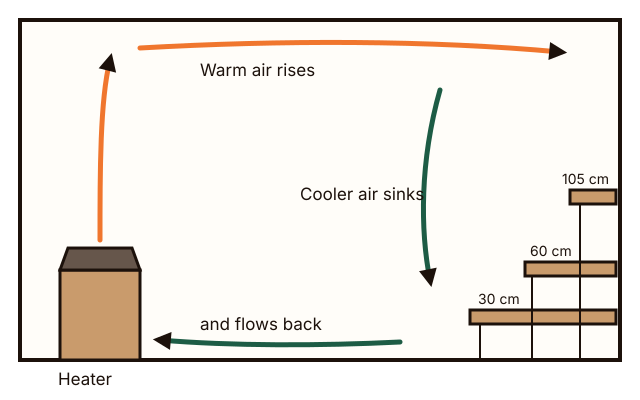

Why is the top bench hotter?
NameDate
A puzzle about warm air, and two ways to test it: colored water and your own classroom.
1. The puzzle

A sauna heater maker writes:
"Heat rises upward: the top bench is the hottest, while the lower bench feels gentler."
HUUM, "Planning a sauna bench: practical tips and ideas." Typical bench heights: 30, 60 and 105 cm (about 12, 24 and 41 in).
My first guess: it is one room with the same air. Why would the air by the top bench be hotter?
2. Part A: colored water
Safety: warm tap water only, nothing hotter. Wipe up spills right away. Food coloring stains.
| I predict it will… | What happened (words and a drawing) | |
|---|---|---|
| Warm red water, squeezed out slowly at the bottom | ||
| Ice-cold blue water, squeezed out slowly at the top |
Why do you think each one moved the way it did?
Sauna physics lesson · DIVELUX · CC BY 4.0 · diveluxsaunahat.com/pages/sauna-tools
3. Part B: the air in our classroom
| Thermometer | Height | Temperature |
|---|---|---|
| Floor | 0 m | |
| Desk | 0.75 m | |
| High | about 2 m |
What pattern do you see? Is the difference big or small?
Temperature (°C or °F)
Name two things that could make a small difference hard to measure.
4. Model it
Draw the particles in a small box of warm water and a small box of cold water. Use the same number of particles in each box. Show how fast they move with arrows: longer arrow, faster.
5. Explain the sauna
- Rank the benches from hottest to gentlest: 30 cm, 60 cm, 105 cm.
- Use the diagram on page 1. Describe the path the air takes around the sauna.
- Exit ticket. Rewrite your first guess as an explanation. Use the words particles, density and convection.
Word bank: particles · faster · slower · spread out · closer together · density · less dense · denser · rises · sinks · convection · energy
Sauna physics lesson · DIVELUX · CC BY 4.0 · diveluxsaunahat.com/pages/sauna-tools · Quotation: HUUM, huum.eu